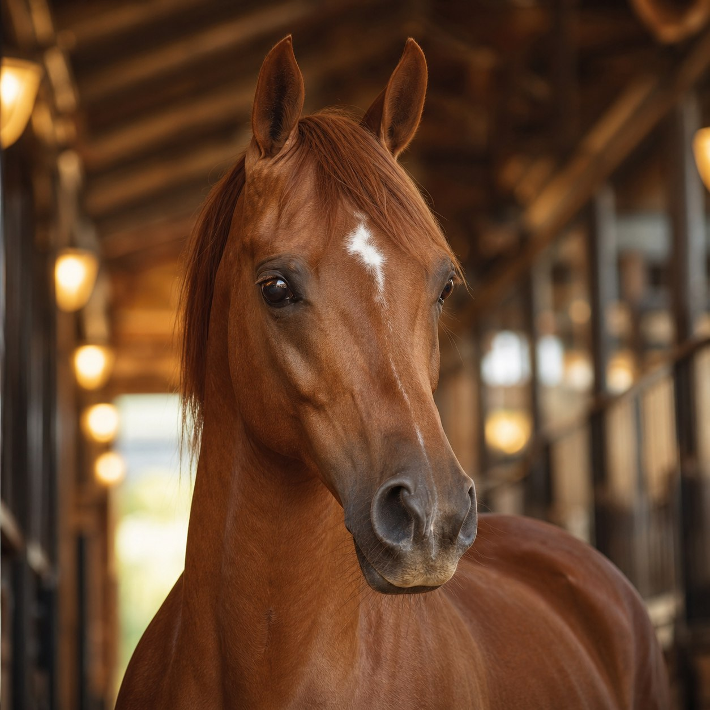
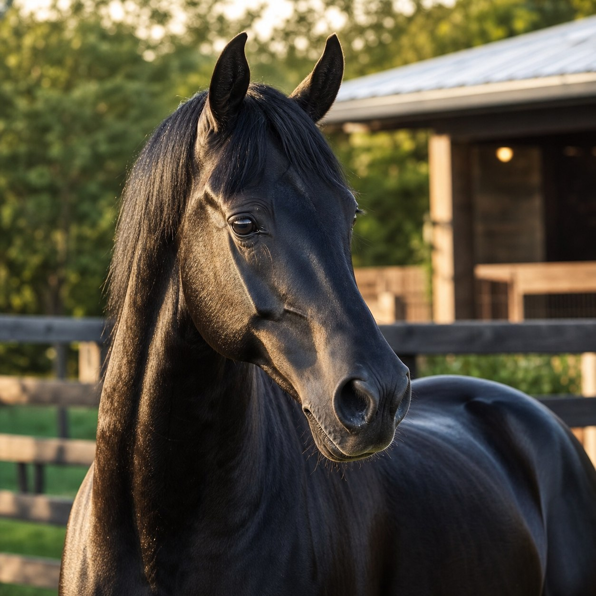

اعرف ما يحدث الآن
الرئيسية تجمع حالة الخيول والمشتركين والمواعيد والتنبيهات التي تحتاج انتباهك.
التقنية التي يفهمها أهل الخيل
من أول صورة للخيل حتى آخر اشتراك وتقرير؛ تجربة عربية مبهرة تجمع الرعاية والمشتركين والحسابات والتنبيهات في مكان واحد واضح وسريع.
حمّل التطبيق الآنسايس الخيل للأندرويدملف كامل 58.4 ميجابايت — انتظر اكتمال التنزيل قبل فتحه
أكثر من تطبيق إدارة
صُمم سايس الخيل ليختصر الفوضى ويحوّل تفاصيل الإسطبل الكثيرة إلى تجربة ممتعة ومنظمة.
الرئيسية تجمع حالة الخيول والمشتركين والمواعيد والتنبيهات التي تحتاج انتباهك.
تنبيهات للرعاية والعلاج والتحذية والتمارين والغرف وانتهاء الاشتراكات.
المعلومة تنتقل إلى ملف الخيل والعضو والمالية والتقارير في مكانها الصحيح.
واجهة تلفت النظر وتخدم العمل
بطاقات واضحة، صور كبيرة، ألوان للحالات، ووصول سريع إلى التفاصيل المهمة دون ازدحام.

بيانات تجريبيةكل ما يحتاج انتباهك اليوم في مكان واحد

كل الأدوات. تجربة واحدة.
كل قسم بُني ليكمل الآخر، من الحصان وصاحبه إلى الاشتراك والحركة المالية والتقرير النهائي.
البيانات والصور والمالك والغرفة والعلاج والتحصين والتحذية والتمارين والملاحظات والسجل المحفوظ.
ملف العضو، خيوله، اشتراكاته، مدفوعاته، رصيده وسجلّه الكامل.
صوت واهتزاز وشاشة واضحة باسم الخيل أو المشترك وسبب التنبيه.
سندات وقبض وصرف واشتراكات وأرصدة بلا تكرار للحركات أو ضياع للتفاصيل.
التقط صور الخيل والعلاج والغرف والتحذية والتمارين وأرفقها مباشرة بالتفاصيل.
تقارير دقيقة وفواتير مرتبة بهوية المنشأة، جاهزة للمراجعة والطباعة والمشاركة.
ترابط تشعر به من أول استخدام
رعاية أو علاج أو اشتراك أو حركة مالية.
بالخيل والمشترك والتاريخ والقسم الصحيح.
تنبيه واضح يبقى متزامنًا مع أي تعديل.
السجل والتقرير يحفظان تاريخ العمل كاملًا.
ملكك من البداية
يبدأ التطبيق فارغًا لبياناتك أنت، يعمل محليًا دون إنترنت، ويمنحك النسخ الاحتياطي والاستعادة بسهولة متى احتجت.
سايس الخيل
تجربة عربية صُممت لمن يعرف قيمة الخيل، ويفهم أن الإدارة الدقيقة تبدأ من معلومة واضحة في وقتها.